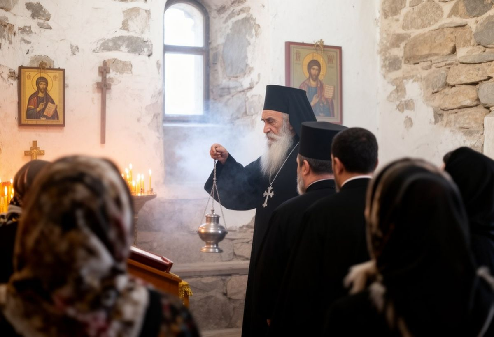

Mar Ephrem, Archbishop of Iyık Janyl

His Grace Mar Ephrem is Metropolitan Archbishop of Iyık Janyl and head of the Syro-Iradi Catholic Church. He was born in the Talas valley in 1955 and ordained a priest in secret in 1981, when the Church could not yet live in the open. After 1992 he studied at the Pontifical Oriental Institute in Rome. He was Bishop of Talas from 2004 to 2012, when the Council of Hierarchs proposed him and the Holy Father appointed him Archbishop. He was enthroned in this cathedral that year.
The Archbishop presides over the Council of Hierarchs. Since 2007 he has met regularly with Muslim leaders and the Russian Orthodox bishops of the country, and he has kept the Church’s priests serving on both sides of the line, in the cities and in the mountain parishes alike.
Letter for the Season of Moses
Read in all the parishes of the archeparchy on Sunday 4 October 2026.
Beloved in Christ, peace and blessing.
In October our Church walks with Moses. He led a people out of slavery and through forty years of desert, and at the end he was shown the promised land from the top of a mountain and told he would not enter it. The road of Moses ends at the edge of the promised land, not inside it. This season asks us to walk honestly, even when we will not see the end of the road ourselves.
Many of you have written to me this year about the price of bread and of dollars, about sons working in Russia, and about the uncertainty of the year ahead. I cannot tell you how these things will turn out. I can tell you what Moses was asked to carry down the mountain: words written in stone, so that no one could change them afterwards. A people lives by words it can trust. When our bishops asked in 2024 for truthful public information, it asked for nothing more than this, and it asks still.
Next year the agreement on the waters of the Naryn will be renewed. Water was given by God to the herds and the fields of every family, on both sides of every line. It can be shared, and it must be shared justly. It cannot be pledged or sold by anyone who does not own it, and no one owns it. I ask you to pray for those who will sit at that table.
And I ask you, in this season, to be people of the road: to visit the sick, to feed the pilgrim, to walk up this hill once more before the snow. The Rider goes before us.
With my blessing,
✠ Ephrem, Archbishop of Iyık Janyl
The bishops of Iyık Janyl
| Bishop | Years |
|---|---|
| Mar Gewargis, first bishop known to reside at the church | until 1744 |
| Mar Timotheos Alimbekov, bishop before 1914; first Archbishop from 1931 | to 1938, died in custody |
| No archbishop could be named. The hidden Church was kept by priests ordained in secret and, by our tradition, by bishops consecrated in secret, whose names are still being gathered | 1938–1992 |
| Mar Yuhanna Bakirov, appointed December 1992 | 1992–2012 |
| Mar Ephrem | since 2012 |
The cathedral chronicle records further bishops between Mar Gewargis and Mar Timotheos; their list is being prepared for publication by the Diocesan Archives.